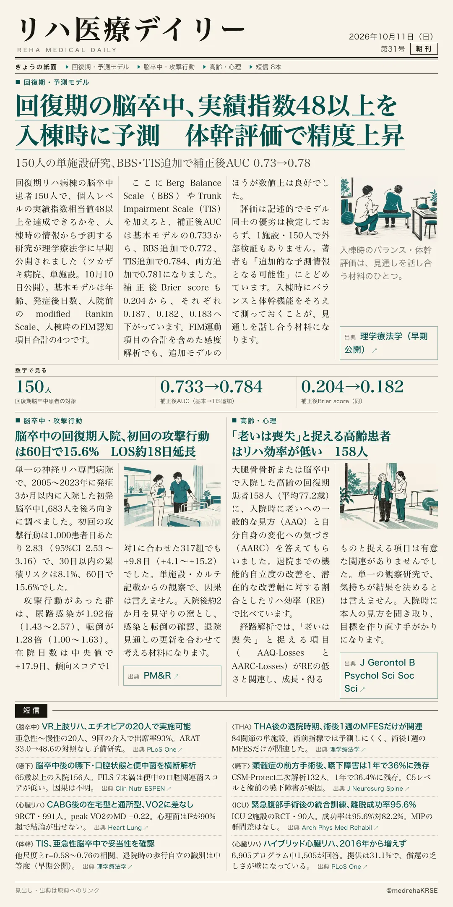
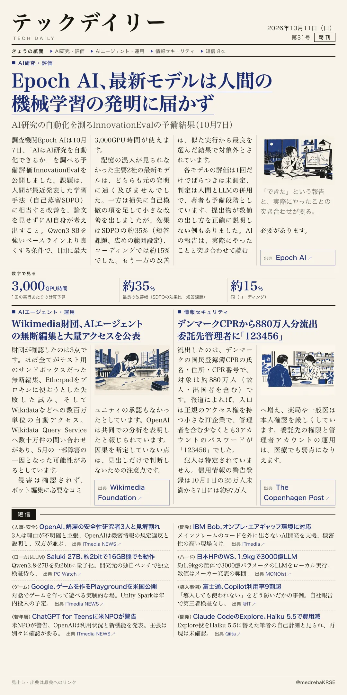

リハ医療デイリー
回復期の脳卒中、実績指数48以上を入棟時に予測 体幹評価で精度上昇
150人の単施設研究、BBS・TIS追加で補正後AUC 0.73→0.78
回復期リハ病棟の脳卒中患者で、個人単位の実績指数相当値48以上に届くかを入棟時の情報で予測する研究が出ました。

テックデイリー
Epoch AI、最新モデルは人間の機械学習の発明に届かず
AI研究の自動化を測るInnovationEvalの予備結果（10月7日）
AIはAI研究そのものを自動化できるのか。Epoch AIが、論文を見せずに人間の発明を再現できるかを調べました。
